UDN
Search public documentation:
MatineeTrackReferenceKR
English Translation
日本語訳
中国翻译
Interested in the Unreal Engine?
Visit the Unreal Technology site.
Looking for jobs and company info?
Check out the Epic games site.
Questions about support via UDN?
Contact the UDN Staff
日本語訳
中国翻译
Interested in the Unreal Engine?
Visit the Unreal Technology site.
Looking for jobs and company info?
Check out the Epic games site.
Questions about support via UDN?
Contact the UDN Staff
UE3 홈 > 언리얼 에디터와 툴 > 마티네 사용 안내서 > 마티네 트랙 참고서
UE3 홈 > 마티네와 시네마틱 > 마티네 트랙 참고서
UE3 홈 > 시네마틱 아티스트 > 마티네 트랙 참고서
UE3 홈 > 마티네와 시네마틱 > 마티네 트랙 참고서
UE3 홈 > 시네마틱 아티스트 > 마티네 트랙 참고서
마티네 트랙 참고서
문서 변경내역: Jeff Wilson 작성. 홍성진 번역.
개요
불 프로퍼티 트랙
- 프로퍼티명 - 이 트랙이 시간에 따라 변경하게 될 연결 액터의 프로퍼티 이름을 가리키는 읽기 전용 변수입니다.
이벤트 트랙
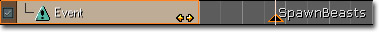
그리고 이건 키즈멧의 마티네 액션으로, 새로운 출력 단자가 보이며, 스크립트 이벤트 세트를 연결할 수 있습니다.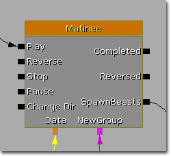
이벤트 트랙 헤더의 버튼을 통해 시퀸스가 정방향 재생, 역방향 재생, 혹은 둘다의 경우에 출력을 발동시킬지 여부를 조절할 수 있습니다. 오른 화살표 버튼이 노랑이면, 해당 트랙의 이벤트는 시퀸스가 정방향으로 재생될 때 전달되면서 발동되게 됩니다. 왼쪽 화살표 버튼이 노랑이면, 시퀸스가 역방향 재생될 때 이벤트가 발동되게 됩니다.
이벤트 트랙이 있는 그룹은 중요치 않으며, 그 그룹에 액터가 부착되어 있지 않아도 됩니다.
이벤트 키에 오른클릭하면 이름을 바꿀 수 있습니다. 그리 하면 이름이 같은 다른 키는 물론 마티네 액션의 출력 단자 이름도 바뀌게 됩니다.
프로퍼티
버튼을 통해 시퀸스가 정방향 재생, 역방향 재생, 혹은 둘다의 경우에 출력을 발동시킬지 여부를 조절할 수 있습니다. 오른 화살표 버튼이 노랑이면, 해당 트랙의 이벤트는 시퀸스가 정방향으로 재생될 때 전달되면서 발동되게 됩니다. 왼쪽 화살표 버튼이 노랑이면, 시퀸스가 역방향 재생될 때 이벤트가 발동되게 됩니다.
이벤트 트랙이 있는 그룹은 중요치 않으며, 그 그룹에 액터가 부착되어 있지 않아도 됩니다.
이벤트 키에 오른클릭하면 이름을 바꿀 수 있습니다. 그리 하면 이름이 같은 다른 키는 물론 마티네 액션의 출력 단자 이름도 바뀌게 됩니다.
프로퍼티
- Active Condition (활성화 조건) - 언제 트랙이 켜질지를 정합니다. 항상, 고어가 켜졌을 때, 고어가 꺼졌을 때 등입니다.
- Fire Events When Backwards (역방향일 때 이벤트 발동) - 참이면 이 트랙용 이벤트는 마티네가 역방향으로 재생할 때 발동됩니다.
- Fire Events When Forwards (정방향일 때 이벤트 발동) - 참이면 이 트랙용 이벤트는 마티네가 정방향으로 재생할 때 발동됩니다.
- Fire Events When Jumping Forward (정방향으로 점프할 때 이벤트 발동) - 참이면 마티네를 건너뛰어도 트랙의 모든 이벤트가 발동될 수 있게 합니다.
FaceFX 트랙
- Active Condition (활성화 조건) - 언제 트랙이 켜질지를 정합니다. 항상, 고어가 켜졌을 때, 고어가 꺼졌을 때 등입니다.
- FaceFX AnimSets (FaceFX 애님셋) - 애니메이션 데이터를 끌어올 부가 FaceFX 애님셋 목록입니다.
애님 콘트롤 트랙
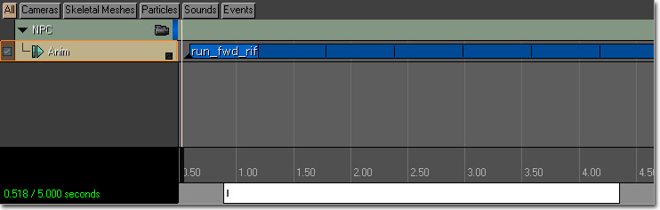
애니메이션의 시작과 끝 오프셋은, 그 위에 오른클릭하고 메뉴에서 옵션을 선택하여 변경할 수도 있습니다. 애님콘트롤 트랙 작업시 또다른 쓸만한 기능은 'Razor' 툴입니다. 이를 통해 한 애니메이션 블록을 지정된 위치에서 2조각으로 분리할 수 있습니다. 그냥 애님콘트롤 트랙을 선택하고, 원하는 위치로 문질러 이동한 후 'R' 키를 치면 됩니다. 애니메이션이 선택되었을 때 나타나는 끝 마커를 사용하여 애니메이션을 크롭/크기조절할 수도 있습니다. 마커를 일반적으로 끌면 애니메이션의 시작과 끝 오프셋을 변경하는 (애니메이션을 크로핑하는) 겁니다. Ctrl 키를 누르고서 끌면 애니메이션의 재생율을 변경하게 (애니메이션을 늘이게) 됩니다. Alt 키를 누르고서 끌면, 애니메이션 길이는 유지하되 시작/끝 오프셋만 변경하고, 애니메이션 길이를 동일하게 유지하기 위해 재생율을 조절합니다.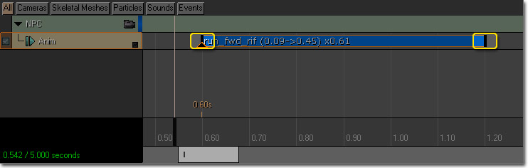
애니메이션의 Notify(통지)는 마티네 시퀸스가 정방향으로 재생될 때만 실행됨에 유의하십시오. 이 트랙 사용법에 대한 상세 정보는 마티네 애님 콘트롤 트랙 페이지를 참고하십시오.플로트 머티리얼 파람 트랙
- Active Condition (활성화 조건) - 언제 트랙이 켜질지를 정합니다. 항상, 고어가 켜졌을 때, 고어가 꺼졌을 때 등입니다.
- Curve Tension (곡선 장력) - 수동으로 키프레임 탄젠트를 조절하지 않을 때, 애니메이션 커브의 코너를 얼마나 '급격하게' 할 지를 조절합니다.
- Materials (머티리얼) - 파라미터를 변경할 머티리얼과 해당 머티리얼로의 참조 목록으로, 저장 시간에 컴파일되는, 레벨에 MaterialInstanceConstant(머티리얼 인스턴스 상수)를 지정해 줘야 하는 머티리얼입니다.
- Param Name (파람 이름) - 머티리얼 내 변경할 파라미터의 이름입니다.
플로트 파티클 파람 트랙
- Active Condition (활성화 조건) - 언제 트랙이 켜질지를 정합니다. 항상, 고어가 켜졌을 때, 고어가 꺼졌을 때 등입니다.
- Curve Tension (곡선 장력) - 수동으로 키프레임 탄젠트를 조절하지 않을 때, 애니메이션 커브의 코너를 얼마나 '급격하게' 할 지를 조절합니다.
- Param Name (파람 이름) - 파티클 시스템 내 변경할 파라미터 이름입니다.
플로트 프로퍼티 트랙
- Active Condition (활성화 조건) - 언제 트랙이 켜질지를 정합니다. 항상, 고어가 켜졌을 때, 고어가 꺼졌을 때 등입니다.
- Curve Tension (곡선 장력) - 수동으로 키프레임 탄젠트를 조절하지 않을 때, 애니메이션 커브의 코너를 얼마나 '급격하게' 할 지를 조절합니다.
- Property Name (프로퍼티 이름) - 이 트랙이 시간에 따라 변경하게 될 연결 액터의 프로퍼티명을 가리키는 읽기-전용 변수입니다.
모프 웨이트 트랙
- Active Condition (활성화 조건) - 언제 트랙이 켜질지를 정합니다. 항상, 고어가 켜졌을 때, 고어가 꺼졌을 때 등입니다.
- Curve Tension (곡선 장력) - 수동으로 키프레임 탄젠트를 조절하지 않을 때, 애니메이션 커브의 코너를 얼마나 '급격하게' 할 지를 조절합니다.
- Morph Node Name (모프 노드 이름) - 애님트리에 제어할 모프 노드의 이름입니다.
스켈콘트롤 스케일 트랙
- Active Condition (활성화 조건) - 언제 트랙이 켜질지를 정합니다. 항상, 고어가 켜졌을 때, 고어가 꺼졌을 때 등입니다.
- Curve Tension (곡선 장력) - 수동으로 키프레임 탄젠트를 조절하지 않을 때, 애니메이션 커브의 코너를 얼마나 '급격하게' 할 지를 조절합니다.
- Skel Control Name (스켈 콘트롤 이름) - 애님트리에 제어할 스켈레탈 콘트롤러의 이름입니다.
선형 색 프로퍼티 트랙
- Active Condition (활성화 조건) - 언제 트랙이 켜질지를 정합니다. 항상, 고어가 켜졌을 때, 고어가 꺼졌을 때 등입니다.
- Curve Tension (곡선 장력) - 수동으로 키프레임 탄젠트를 조절하지 않을 때, 애니메이션 커브의 코너를 얼마나 '급격하게' 할 지를 조절합니다.
- Property Name (프로퍼티 이름) - 이 트랙이 시간에 따라 변경하게 될 연결 액터의 프로퍼티명을 가리키는 읽기-전용 변수입니다.
이동 트랙
- 키프레임을 새로 추가할 시간으로 문질러 이동합니다.
- 엔터키를 치거나 '키 추가' 버튼을 눌러 해당 시간에 키프레임을 새로 만듭니다.
- 해당 프레임에 적절한 위치로 액터를 옮깁니다.
 3D 뷰포트에서 액터의 경로가 보입니다. 그룹이 선택되면 경로는 노랗게, 나머지는 그룹 에디터 색으로 그려집니다. 3D 뷰포트의 큰 키를 클릭하여 키를 선택할 수 있으며, 메인 마티네 창에서 선택했던 것과 같은 식으로 편집할 수도 있습니다. 작은 틱은 0.1초 간격을 나타내니, 이를 통해 오브젝트의 속도를 가늠해 볼 수 있습니다.
키프레임이 선택되면 레벨 뷰포트에 하얀 핸들이 나타나며, 이를 통해 해당 키에서의 속도를 조절하고 커브의 모양을 바꿀 수 있습니다. 기본값으로 키프레임간의 보간 모드는 커브이나, 메인 마티네에 있는 키에 오른클릭하여 보간 모드를 바꿀 수 있습니다. 마티네 창의 키프레임 삼각형 색은 사용중인 현재 보간 모드를 나타냅니다.
3D 뷰포트에서 액터의 경로가 보입니다. 그룹이 선택되면 경로는 노랗게, 나머지는 그룹 에디터 색으로 그려집니다. 3D 뷰포트의 큰 키를 클릭하여 키를 선택할 수 있으며, 메인 마티네 창에서 선택했던 것과 같은 식으로 편집할 수도 있습니다. 작은 틱은 0.1초 간격을 나타내니, 이를 통해 오브젝트의 속도를 가늠해 볼 수 있습니다.
키프레임이 선택되면 레벨 뷰포트에 하얀 핸들이 나타나며, 이를 통해 해당 키에서의 속도를 조절하고 커브의 모양을 바꿀 수 있습니다. 기본값으로 키프레임간의 보간 모드는 커브이나, 메인 마티네에 있는 키에 오른클릭하여 보간 모드를 바꿀 수 있습니다. 마티네 창의 키프레임 삼각형 색은 사용중인 현재 보간 모드를 나타냅니다.
 '커브 에디터로 전송'(도표의 16번) 버튼을 통해서도 커브 에디터 를 사용하여 시간에 따른 액터의 이동과 회전을 미세 조정할 수 있습니다. 이동 트랙의 bShowRotationOnCurveEd (커브에디터에 회전 표시) 및 bShowTranslationOnCurveEd (커브에디터에 이동 표시) 옵션을 통해 회전 및/또는 이동 커브 중 어느 것을 볼지를 제어할 수 있습니다.
프로퍼티
'커브 에디터로 전송'(도표의 16번) 버튼을 통해서도 커브 에디터 를 사용하여 시간에 따른 액터의 이동과 회전을 미세 조정할 수 있습니다. 이동 트랙의 bShowRotationOnCurveEd (커브에디터에 회전 표시) 및 bShowTranslationOnCurveEd (커브에디터에 이동 표시) 옵션을 통해 회전 및/또는 이동 커브 중 어느 것을 볼지를 제어할 수 있습니다.
프로퍼티
- Active Condition (활성화 조건) - 언제 트랙이 켜질지를 정합니다. 항상, 고어가 켜졌을 때, 고어가 꺼졌을 때 등입니다.
- Ang Curve Tension (각 커브 장력) - 수동으로 키프레임 탄젠트를 조절하지 않을 때, 회전 방향의 변경이 얼마나 '급격하게' 할 지를 조절합니다. Euler(오일러) 회전 보간 모드를 사용할 때만 효과가 있습니다.
- Disable Movement (이동 끄기) - 미리보기에 요 이동트랙을 끕니다. 다른 액터에 상대적으로 액터를 키프레이밍할 때 쓸만합니다.
- Hide 3D Track (3D 트랙 숨김) - 뷰포트에 트랙의 3D 이동 경로 표시를 토글합니다.
- Lin Curve Tension (선형 커브 장력) - 수동으로 키프레임 탄젠트를 조절하지 않을 때, 이동 트랙의 코너를 얼마나 '급격하게' 할 지를 조절합니다.
- Look At Group Name (그룹명 보기) - 이 액터가 가리킬 그룹명입니다. (Rot Mode가 IMR_LookAtGroup 일때만 사용)
- Move Frame (이동 프레임) - 이동 트랙의 참조 프레임이 월드인지 초기에 상대적인지를 가리키는 읽기-전용 변수입니다. 트랙 제목에 오른클릭하여 변경합니다.
- Rot Mode (회전 모드) - 제어되는 액터의 회전을 결정하는 데 사용할 방법을 선택할 수 있습니다.
- Show Arrow At Keys (키에 화살표시) - 각 키프레임에 화살표시를 하여 각 키프레임의 방향을 확인할 수 있습니다.
- Show Rotation On Curve Ed (커브 에디터에 회전 표시) - 커브 에디터에 이동 트랙을 표시할 때 회전에 대한 커브를 표시합니다. bUseQuatInterpolation (쿼터니언 보간 사용)이 False일 때만 작동합니다.
- Show Translation On Curve Ed (커브 에디터에 이동 표시) - 커브 에디터에 이동 트랙을 표시할 때 이동에 대한 커브를 표시합니다.
- Use Quat Interpolation (쿼터니언 보간 사용) - 회전 보간 방법을 Quaternion(쿼터니언) 및 Euler(오일러) 사이에서 변경합니다.
이동 참조 프레임
오브젝트 키프레임 방법에는 두 가지 참조 프레임이 있습니다. 'World'(월드)와 'Relative To Initial'(초기에 상대적) 입니다. '월드'는 가장 간단합니다. 그냥 레벨에 상대적인 위치로 각 키프레임을 저장합니다. 시퀸스를 재생할 때, 키프레임을 놓은 레벨의 딱 그위치로 오브젝트가 점프합니다. 오브젝트가 어디에 있을 지를 확실히 보장할 수 있으나, 레벨 일부를 옮기고 싶을 때나 애니메이션을 다른 오브젝트에 재사용하고 싶을 때(나중에 마티네 데이터 재사용하기 에서 자세히) 좀 짜증날 수 있습니다. '초기에 상대적'은 액터가 변경하는 현위치에서 시작되도록 보간을 초기화시킵니다. 그래서 액터를 레벨 내 다른 곳에 놔도 마찬가지로 이동되며, 액터의 초기 위치에 상대적으로 실행합니다. 또한 오브젝트의 '초기에 상대적' 이동 트랙이 로컬 X축을 따라 이동하는 경우, 해당 액터를 회전하면 따라서 이동하게 만듭니다. 그 덕에 한 애니메이션을 레벨 대 다른 액터에 많이 적용하기가 매우 수월해 집니다. '월드' 프로퍼티로 이렇게 한다면, 시퀸스가 시작할 때 모든 액터가 같은 위치로 점프하게 될 겁니다. 아래 그림은 각기 다른 위치와 방향의 두 오브젝트에 '초기에 상대적' 모션이 적용된 모습을 표시한 그림입니다.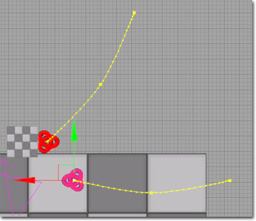
이동 트랙에 적용할 참조 프레임을 선택하려면, 왼쪽의 제목 헤더에 우클릭하고 메뉴에서 원하는 프레임을 선택하면 됩니다.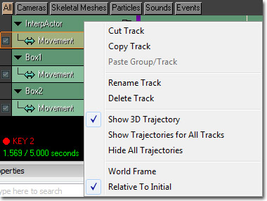
회전 보간
마티네는 키프레임간 액터를 회전하는 데 두 가지 회전 보간 스키마를 사용합니다. 'Euler'(오일러)와 'Quaternion'(쿼터니언) 입니다. '오일러'는 기본 방식으로, 키프래임 값 사이 액터의 Yaw, Pitch, Roll을 보간하는 식으로 작동합니다. 이를 통해 커브 에디터에서 시간에 따른 방향에 대한 커브 셋을 편집할 수 있으며, 키프레임간 이즈인/이즈아웃 제어가 가능합니다. 또한 와인딩(winding)도 지원하는데, 오브젝트를 여러번 회전시키는 경우 그냥 돌려버리는 대신 완전 회전수를 키프레임에 저장합니다. 이를 통해 벽에 박힌 나사같은 것의 키프레임을 쉽게 할 수 있으며, 두 방향 사이를 이동하는 액터의 방향에 대한 완벽 제어도 가능합니다. `쿼터니언' 보간은 와인딩을 지원하지는 않으며, 근본적으로 이즈 인/아웃 지원 없는 키프레임간의 선형 보간입니다. 그러나 훨씬 탄탄하기에 항상 두 방향 사이의 '최단' 루트를 찾아냅니다. bUseQuatInterpolation (쿼터니언 보간 사용) 옵션을 토글하여 어떤 방법을 사용할 지 제어할 수 있습니다. (아래 참고)회전 모드
가끔은 오브젝트나 카메라의 방향을 명시적으로 키프레임하지 않고 싶을 때가 있습니다. 그럴 때 머티네에는 두 가지 회전 모드가 있습니다: 'Keyframed'(키프레임된)이 기본으로, 액터의 방향을 키프레임에 의해 결정하는 겁니다. 'Look At Group'(그룹 보기)는 액터가 항상 다른 그룹에 의해 제어되는 액터를 가리키게 합니다. 카메라를 사용할 때 좋은데, 어디로 움직이든 특정 대상을 항상 바라보게 할 수 있기 때문입니다. 사용하려면 LookAtGroupName 필드에 액터가 바라게 하고픈 그룹 이름을 넣고, RotMode 세팅을 IMR_LookAtGroup 으로 설정합니다.다른 그룹에 상대적인 무버
이동 트랙 키프레임이 그 변형 정보를 동일 마티네 시퀸스 내 다른 그룹에서 찾아보도록 할 수 있습니다. 이는 키프레임이 이동하는 오브젝트를 가리킬 수 있고, 이동 트랙이 해당 위치로 보간하게 할 수 있다는 뜻입니다. 이런 용례는 이동을 예측할 수 없는 캐릭터에 항상 적중하는 발사체를 애니메이팅하는 경우가 되겠습니다. 키프레임이 그 위치를 다른 그룹에서 찾아보도록 설정하려면, 키프레임에 오른클릭하고 "Select Transform Lookup Group..."(변형 룩업 그룹 선택)을 선택하면 됩니다.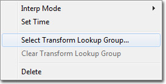
그러면 변형 정보를 찾아볼 그룹을 선택할 수 있는 대화창이 뜹니다. 그룹을 선택하고 나면 키프레임 위에 룩업 그룹의 이름이 표시됩니다. 아래 이미지는 위치 정보 찾아보기에 그룹의 Box1과 Box2를 사용하는 키프레임 넷이 표시되어 있습니다.
그룹을 선택하고 나면 키프레임 위에 룩업 그룹의 이름이 표시됩니다. 아래 이미지는 위치 정보 찾아보기에 그룹의 Box1과 Box2를 사용하는 키프레임 넷이 표시되어 있습니다.
 키프레임에 대한 룩업 그룹을 비우려면, 키프레임에 오른클릭하고 "Clear Transform Lookup Group"(변형 룩업 그룹 비우기)를 선택하면 됩니다.
키프레임에 대한 룩업 그룹을 비우려면, 키프레임에 오른클릭하고 "Clear Transform Lookup Group"(변형 룩업 그룹 비우기)를 선택하면 됩니다.
 이 기능을 사용하는 예제 맵 MatineeLookupTest.ut3 이 DemoContent/TestMaps 폴더에 있습니다.
이 기능을 사용하는 예제 맵 MatineeLookupTest.ut3 이 DemoContent/TestMaps 폴더에 있습니다.
무버에 상대적인 무버
언리얼 엔진 3에서는 한 오브젝트가 다른 것에 상대적으로 움직이도록 키프레임할 수 있습니다. 예를 들면 이동하는 열차 짐칸의 문 열기같은 것을 키프레이밍하는 경우에 좋습니다. 방법은 그냥 키프레임하려는 액터의 베이스를 이동하려는 키프레이밍 시작 전의 상대 위치 액터로 설정하면 됩니다.패쓰 빌드하기
문과 같은 액터의 초기 위치는 꽤 자주 '닫힌' 상태입니다. AI 시스템용 패쓰 네트워크를 빌드할 때는, 문을 통해서는 무버가 중간에 있기 때문에 패쓰를 찾을 수가 없습니다. 이 문제를 해결하려면, 마티네 시퀸스 안에 패쓰를 빌드할 때 사용할 지점을 설정해 주면 됩니다. 경로를 빌드할 때 액터가 있었으면 하는 시퀸스 내 지점으로 그냥 문질러 간 뒤, '편집' 메뉴에서 '패쓰-빌드 위치로 저장' 을 선택합니다. 스크럽 바에 현재 패쓰-빌드 재생 위치를 표시하기 위한 작은 파랑 체크가 나타납니다: 패쓰 빌드가 일어날 때 마티네 액션이 액터를 움직이게 하려면, 액터 자체에 있는 'bInterpForPathBuilding'(패쓰 빌드용 보간) 플랙도 체크해야 합니다. 특정 액터에 bInterpForPathBuilding 이 true로 설정된 마티네 액션이 둘 이상 돌아다니게 되면 위치가 애매해지게 되기에, 하나만 가능함에 유의하십시오.
패쓰 빌드가 일어날 때 마티네 액션이 액터를 움직이게 하려면, 액터 자체에 있는 'bInterpForPathBuilding'(패쓰 빌드용 보간) 플랙도 체크해야 합니다. 특정 액터에 bInterpForPathBuilding 이 true로 설정된 마티네 액션이 둘 이상 돌아다니게 되면 위치가 애매해지게 되기에, 하나만 가능함에 유의하십시오.
옮기기와 회전 분할하기
이제 이동 트랙의 옮기기와 회전 콤포넌트를 "분할"할 수 있게 되어, 각 축에 개별적으로 키프레임할 수 있게 되었습니다. 이를 통해 이동 트랙 커브에 대한 미세 제어가 가능합니다. 이동 트랙 "분할"하기는 선택 가능한 프로세스입니다. 기본적으로 모든 이동 트랙은 결합, 즉 옮기기와 회전 커브는 같은 수의 키프레임을 가지며 모든 키프레임은 시간상 같은 위치에 있습니다. 이동 트랙을 분할하려면 그냥 이동 트랙에 우클릭하여 뜨는 맥락 메뉴에서 "옮기기와 회전 분할"을 선택하면 됩니다.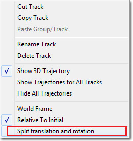
이동 트랙을 분할하고 나면 이런 식으로 보입니다. 각 축은 고유 트랙처럼 작동하므로 키프레임 수를 임의로 조절할 수 있습니다.
옮기기와 회전 콤포넌트는 같은 그룹이어서 사용하지 않을 때는 접을 수 있습니다. 옮기기 및 회전 그룹에 붙어 있는 세로 바는 하나 이상의 축에 있는 키프레임을 나타냅니다. 세로 바를 선택하면 그 아래 키프레임이 전부 선택되니, 다수의 키프레임을 한 번에 선택할 수 있습니다.
주: 옮기기와 회전이 분할되었을 때는 쿼터니언 보간 모드를 사용할 수 없습니다.
각 축은 고유 트랙처럼 작동하므로 키프레임 수를 임의로 조절할 수 있습니다.
옮기기와 회전 콤포넌트는 같은 그룹이어서 사용하지 않을 때는 접을 수 있습니다. 옮기기 및 회전 그룹에 붙어 있는 세로 바는 하나 이상의 축에 있는 키프레임을 나타냅니다. 세로 바를 선택하면 그 아래 키프레임이 전부 선택되니, 다수의 키프레임을 한 번에 선택할 수 있습니다.
주: 옮기기와 회전이 분할되었을 때는 쿼터니언 보간 모드를 사용할 수 없습니다.
속도 정규화
베지어 커브로 작업할 때는, 커브상을 움직이는 오브젝트의 속도가 키프레임의 모양이나 공간에 따라 빨라지거나 느려지는 상황이 종종 있을 수 있습니다. 속도 정규화(Normalize Velocity) 옵션을 통해 그 위를 움직이는 오브젝트의 속도를 일정하게 유지하기 위해 이동 트랙의 옮기기 커브를 변경할 수 있습니다. 고정 속도는 이동 트랙 커브가 생성하는 3D 경로를 사용한다는 점을 아시는 것이 중요합니다. 속도 정규화가 사용될 때, 옮기기 각 축에 대한 2D 커브는 모양이 바뀔 수 있으나, 그게 생성하는 3D 경로는 원래 경로에서 모양이 바뀌지 않을 겁니다. 속도 정규화는 메뉴에서 옵션을 선택한 이후 계속해서 커브를 고정 속도로 강제하는 것은 아닙니다. 그냥 원래 커브를 검사하여 일정한 속도를 유지하게끔 한 번 조절해 주는 겁니다. 그 후로 커브를 변경하면 더이상 고정 속도가 아닌 겁니다. 주:- 속도 정규화는 옮기기와 회전이 분리된 이동 트랙에서만 사용가능합니다. (윗부분 참고)
- 전체 기간이 아니라도 커브의 일부상에서만 속도 정규화가 가능합니다. 이런 작업을 할 때 속도 정규화 루틴은 정규화되고 있는 부분의 바로 직전과 직후에 키프레임을 추가합니다. 정규화되지 않는 커브 부분은 손상되지 않게 하기 위해 수행되는 작업입니다. 재생 도중 커브 이행을 따라 이동하는 오브젝트가 속도 정규화된 부분에 들어갈 때와 나올 때, 이동이 "덜컥" 거리는 걸 느낄 수도 있습니다. 이 문제를 해결하려면 정규화된 부분 앞뒤의 키프레임을 수동으로 조절해 줘야 합니다.
파티클 리플레이 트랙
 선택하면 시간선의 클립 바의 한쪽 끝에 있는 핸들을 사용하여 클립의 기간과 시작점을 조절할 수 있습니다. 한 쪽 핸들에 좌클릭하고 마우스를 끌어 핸들을 움직이면 클립의 기간이 조절됩니다. 기간 조절 없이 클립을 옮기려면, 키 자체에 Ctrl+클릭하고 끌면 됩니다.
선택하면 시간선의 클립 바의 한쪽 끝에 있는 핸들을 사용하여 클립의 기간과 시작점을 조절할 수 있습니다. 한 쪽 핸들에 좌클릭하고 마우스를 끌어 핸들을 움직이면 클립의 기간이 조절됩니다. 기간 조절 없이 클립을 옮기려면, 키 자체에 Ctrl+클릭하고 끌면 됩니다.
 클립의 시작 위치와 기간 조절 뿐만 아니라 시간선에 있는 클립의 바에 우클릭하고 메뉴에서 적절한 옵션을 선택하여 클립의 ID를 바꿀 수도 있습니다.
클립의 시작 위치와 기간 조절 뿐만 아니라 시간선에 있는 클립의 바에 우클릭하고 메뉴에서 적절한 옵션을 선택하여 클립의 ID를 바꿀 수도 있습니다.
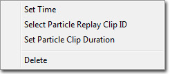
파티클 시스템 녹화를 시작하려면 트랙에 우클릭하여 뜨는 맥락 메뉴에서 Start Recording Particles (파티클 녹화 시작)을 선택하시기 바랍니다.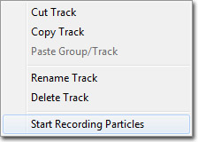
녹화중일 때는 시간선에 있는 클립 바가 반전됩니다.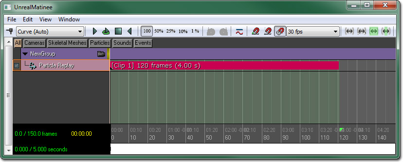
재생을 시작하려면 툴바에 있는 버튼을 누르십시오. 녹화가 켜지면 트랙이 재생 도중의 파티클을 녹화합니다. 녹화가 끝나면 트랙에 다시 우클릭, Stop Recording Particles (파티클 녹화 중지)를 선택하십시오.
버튼을 누르십시오. 녹화가 켜지면 트랙이 재생 도중의 파티클을 녹화합니다. 녹화가 끝나면 트랙에 다시 우클릭, Stop Recording Particles (파티클 녹화 중지)를 선택하십시오.
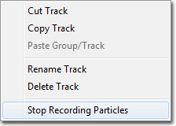
이제 버튼을 누르면 녹화된 클립으로부터 파티클 시스템이 재생되며, 시간선을 앞뒤로 문질러 클립 녹화를 조사해 볼 수도 있습니다.
토글 트랙
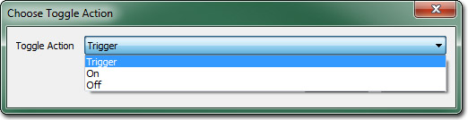
옵션은:- Trigger (트리거) - 파티클 시스템의 원샷 활성화입니다.
- On (켜기) - 파티클 시스템을 켭니다.
- Off (끄기) - 파티클 시스템을 끕니다.
 프로퍼티
프로퍼티
- Activate System Each Update (각 업데이트마다 시스템 활성화) - 참이면 에미터에서 활성화 시스템을 호출하여 (오래된 '틀린' 동작을) 각각 업데이트합니다. 거짓이면 파티클 시스템은 예전에 비활성 상태였을 경우에만 활성화되게 됩니다.
- Active Condition (활성화 조건) - 언제 트랙이 켜질지를 정합니다. 항상, 고어가 켜졌을 때, 고어가 꺼졌을 때 등입니다.
- Fire Events When Backwards (역방향일 때 이벤트 발동) - 참이면 이 트랙용 이벤트는 마티네가 역방향으로 재생할 때 발동됩니다.
- Fire Events When Forwards (정방향일 때 이벤트 발동) - 참이면 이 트랙용 이벤트는 마티네가 정방향으로 재생할 때 발동됩니다.
- Fire Events When Jumping Forward (정방향으로 점프할 때 이벤트 발동) - 참이면 마티네를 건너뛰어도 트랙의 모든 이벤트가 발동될 수 있게 합니다.
색 프로퍼티 트랙
- Active Condition (활성화 조건) - 언제 트랙이 켜질지를 정합니다. 항상, 고어가 켜졌을 때, 고어가 꺼졌을 때 등입니다.
- Curve Tension (곡선 장력) - 수동으로 키프레임 탄젠트를 조절하지 않을 때, 애니메이션 커브의 코너를 얼마나 '급격하게' 할 지를 조절합니다.
- Property Name (프로퍼티 이름) - 이 트랙이 시간에 따라 변경하게 될 연결 액터의 프로퍼티명을 가리키는 읽기-전용 변수입니다.
사운드 트랙
- Active Condition (활성화 조건) - 언제 트랙이 켜질지를 정합니다. 항상, 고어가 켜졌을 때, 고어가 꺼졌을 때 등입니다.
- Continue Sound On Matinee End (마티네 종료시 사운드 지속) - 참이면 이 트랙에서 재생되는 사운드가 마티네 시퀸스 종료 이후에도 계속되는 경우 자르지 않습니다. 사운드가 끝날 때까지 재생하게 됩니다.
- Curve Tension (곡선 장력) - 수동으로 키프레임 탄젠트를 조절하지 않을 때, 애니메이션 커브의 코너를 얼마나 '급격하게' 할 지를 조절합니다.
- Play On Reverse (역방향시 재생) - 참이면 이 트랙에서 재생되는 사운드는 마티네 시퀸스가 역방향으로 재생될 때만 나게 됩니다. 시퀸스의 정방향 재생시에는 나지 않습니다. 이 기능의 용례는 무버가 열릴 때의 소리와 닫힐 때의 소리를 다르게 할 경우가 되겠습니다.
- Suppress Subtitles (자막 억제) - 참이면 이 트랙에서 재생되는 사운드에 관련된 자막은 표시되지 않게 됩니다.
벡터 머티리얼 파람 트랙
- Active Condition (활성화 조건) - 언제 트랙이 켜질지를 정합니다. 항상, 고어가 켜졌을 때, 고어가 꺼졌을 때 등입니다.
- Curve Tension (곡선 장력) - 수동으로 키프레임 탄젠트를 조절하지 않을 때, 애니메이션 커브의 코너를 얼마나 '급격하게' 할 지를 조절합니다.
- Materials (머티리얼) - 파라미터를 변경할 머티리얼과 해당 머티리얼로의 참조 목록으로, 저장 시간에 컴파일되는, 레벨에 MaterialInstanceConstant(머티리얼 인스턴스 상수)를 지정해 줘야 하는 머티리얼입니다.
- Param Name (파람 이름) - 머티리얼에 변경할 파라미터 이름입니다.
벡터 프로퍼티 트랙
- Active Condition (활성화 조건) - 언제 트랙이 켜질지를 정합니다. 항상, 고어가 켜졌을 때, 고어가 꺼졌을 때 등입니다.
- Curve Tension (곡선 장력) - 수동으로 키프레임 탄젠트를 조절하지 않을 때, 애니메이션 커브의 코너를 얼마나 '급격하게' 할 지를 조절합니다.
- Property Name (프로퍼티 이름) - 이 트랙이 시간에 따라 변경하게 될 연결 액터의 프로퍼티명을 가리키는 읽기-전용 변수입니다.
표시여부 트랙
 보이도록 설정된 액터가 나중에 다시 보이지 않도록 설정되었을 때, 액터의 상태를 쉽게 식별하기 위해 트랙 디스플레이에 녹색 바가 표시되게 됩니다. 이와 같은 모습은 아래의 표시여부 트랙에서 1.0초까지 보이던 액터가 2.0초에서 보이지 않게 되는 것을 확인해 볼 수 있습니다.
보이도록 설정된 액터가 나중에 다시 보이지 않도록 설정되었을 때, 액터의 상태를 쉽게 식별하기 위해 트랙 디스플레이에 녹색 바가 표시되게 됩니다. 이와 같은 모습은 아래의 표시여부 트랙에서 1.0초까지 보이던 액터가 2.0초에서 보이지 않게 되는 것을 확인해 볼 수 있습니다.
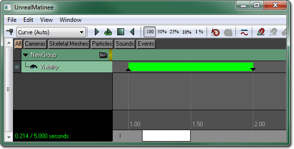
액터의 표시여부를 토글하도록 설정된 키는 토글 키임을 나타내기 위해 작고 빨간 바로 표시됩니다. 프로퍼티
프로퍼티
- Active Condition (활성화 조건) - 언제 트랙이 켜질지를 정합니다. 항상, 고어가 켜졌을 때, 고어가 꺼졌을 때 등입니다.
- Curve Tension (곡선 장력) - 수동으로 키프레임 탄젠트를 조절하지 않을 때, 애니메이션 커브의 코너를 얼마나 '급격하게' 할 지를 조절합니다.
- Property Name (프로퍼티 이름) - 이 트랙이 시간에 따라 변경하게 될 연결 액터의 프로퍼티명을 가리키는 읽기-전용 변수입니다.
AI 그룹
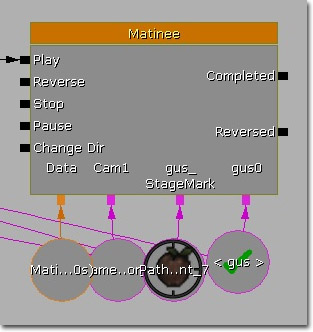
그 두 번째 단계는 Preview Pawn Class 를 선택하는 겁니다. 기본값으로 DefaultEditor.ini 파일에서 지정된 클래스가 됩니다. AIGroupPreviewPawnClassName="MyGame.DefaultGamePawn" 셋업해 줘야 하는 환경설정 정보가 더 있습니다. AIGroupPreviewAnimTreeName="EditorMeshes.PreviewTree" DefaultAnimSlotName="Custom_FullBody" 미리보기 폰에 AnimTreeTemplate (애님트리 템플릿)이 없고 DafaultAnimSlot (기본 애님 슬롯)이 AnimControlTrack (애님 콘트롤 트랙)용 슬롯 노드의 이름일 경우, AIGroupPreviewAnimTreeName (AI그룹 미리보기 애님트리명)이 에디터내 미리보기 트리입니다. DefaultAnimSlotName (기본 애님 슬롯명) 이외에는 전부 미리보기 정보입니다. 실행시간 도중에 애님트리를 바꾸지는 않지만, 그 NodeName이 DefaultSlotName인 슬롯 노드를 가진 스폰된 액터의 현재 애님트리를 사용합니다. 그래서 위에 지정한 슬롯 노드가 애님트리뿐 아니라 미리보기 애님트리에도 있는지 확인해야 합니다. 이 셋업이 끝나면 선택한 폰에 대한 모든 것을 제대로 미리볼 수 있을 겁니다. 미리보기는 게임내 액터를 바꾸지 않습니다. 실행시간 도중에는 마티네 그룹의 변수에 연결된 액터를 사용하게 됩니다. 이게 Pawn이나 Controller 클래스 중 하나인지 확인하시기 바랍니다. 마지막으로 주의할 점은 게임내 AI가 플레이 도중 뭔가 다른 걸 하기로 한 경우, 마티네 코드에서 그걸 막을 방법이 없다는 겁니다. 마니테 코드는 스켈레탈 메시 액터와 완전 똑같이 AI를 처리합니다. 그래서 이 기간 동안에는 AI가 딴 짓을 못하게 하고 싶을 겁니다. 그런경우, 게임내와 마티네간에 경쟁 조건을 보게 됩니다. event MAT_BeginAIGroup(vector StartLoc, rotator StartRot); event MAT_FinishAIGroup(); AI 동작 처리용으로 이와 같은 이벤트를 사용하십시오.디렉터 그룹
디렉터 트랙
Director(디렉터) 트랙은 시퀸스가 진행되면서 다른 액터에 플레이어 뷰를 부착할 수 있습니다. 디렉터 트랙에 키프레임을 새로 추가할 때, 해당 지점에다 뷰를 할당하기 위한 그룹을 선택할 수 있는 콤보 박스가 뜹니다. 디렉터 트랙의 컬러 바를 통해 시퀸스의 각 지점에서 어느 그룹 카메라를 통해 보고 있는지를 알 수 있습니다. 여기서의 색은 각 그룹의 에디터 그룹 색에 해당합니다. 카메라를 플레이어에게 되돌려주고 싶으면, 그냥 디렉터 그룹 자체에다 컷을 다시 추가하기만 하면 됩니다. 즉 디렉터 그룹이란 '플레이어'에 관계된 특수 그룹이라 생각하면 됩니다. 시퀸스 종료시에도 뷰가 플레이어에게 자동으로 돌아가게 됩니다.
샷
디렉터 트랙은 샷 (shot) 이라는 이름으로 나뉘어 있는데, 필름 제작 업계에서도 흔히 접할 수 있는 용어입니다. 각 키는 새로운 샷을 나타내며, 그 샷은 해당 키의 기간 동안 지속됩니다. 마티네에서 미리볼 때나 게임내에서 마티네가 재생중일 때 모두, 에디터 뷰포트에서 샷 이름을 표시할 수 있습니다.
뷰포트 미리보기:
마티네에서 미리볼 때나 게임내에서 마티네가 재생중일 때 모두, 에디터 뷰포트에서 샷 이름을 표시할 수 있습니다.
뷰포트 미리보기:
 게임내 재생:
게임내 재생:
 주: 게임내 마티네 재생 도중 샷 이름을 표시하려면
주: 게임내 마티네 재생 도중 샷 이름을 표시하려면 *Game.ini 파일에 bShowDirectorInfoHUD=true 설정을 하고, 게임타입이 (드로 루프에서 DisplayKismetMessages() 호출을 통해) 키즈멧 메시지 표시를 지원하도록 해야 합니다.
디폴트로 샷에는 시간선 상의 위치에 따라 번호가 붙습니다. 기존의 두 키 사이에 새로운 키를 추가하면, 새로운 키와 관련된 샷에는 기존 샷 사이의 번호가 붙게 됩니다.
기존 키:
 새 키를 추가한 이후:
새 키를 추가한 이후:
 샷 이름은 맥락 메뉴를 통해 바꿀 수 있습니다.
샷 이름은 맥락 메뉴를 통해 바꿀 수 있습니다.
- 기존 샷 이름:
- 샷과 관련이 있는 키를 선택하고, 그 위에 우클릭한 다음 맥락 메뉴에서 이름바꾸기 를 선택합니다.

- 카메라 샷 번호 대화창에 샷의 새 번호를 입력합니다:

- 샷의 새 이름은 이렇습니다:

페이드 트랙
씬이 특정한 색으로 흐려지도록 조절하려면, Fade(페이드) 트랙을 사용하면 됩니다. 이 트랙은 플로트 프로퍼티 트랙과 비슷하게 작동하는데, 커브 에디터 를 통해서만 시간에 따른 페이드 양을 조절할 수 있습니다. 페이드 양이 0.0이면 페이드가 없는 거고, 1.0이면 씬이 완전이 페이드아웃 됩니다.슬로모 트랙
시네마틱에 적용할 수 있는 특수 효과 하나는 게임 속도를 늦추는 것입니다. 이 Slomo(슬로모) 트랙 역시도 플로트 프로퍼티 트랙과 비슷하게 작동하는데, 시간에 따른 슬로우-모션을 변경하기 위해서는 커브 에디터 를 사용해야 합니다. 슬로모 인자 1.0은 기본 게임 속도이며, 낮은 수는 게임 속도를 느리게, 높은 수는 게임 속도를 빠르게 합니다. 슬로모는 모든 게임 액션, 피직스, 파티글 등은 물론 시퀸스 자체의 진행 속도에도 영향을 끼칩니다.오디오 마스터 트랙
Audio Master(오디오 마스터) 트랙은 게임 오디오의 전체 볼륨과 피치를 조절합니다. 오디오 마스터 트랙이 디렉터 그룹에 추가되면, 처음에는 InterpMode(보간 모드)가 Linear(선형)인 기본 키가 하나 있습니다. 새 키를 추가해서 시퀸스에 걸친 볼륨 및/또는 피치를 변경할 수 있습니다. 프로퍼티- Active Condition (활성화 조건) - 언제 트랙이 켜질지를 정합니다. 항상, 고어가 켜졌을 때, 고어가 꺼졌을 때 등입니다.
- Curve Tension (곡선 장력) - 수동으로 키프레임 탄젠트를 조절하지 않을 때, 애니메이션 커브의 코너를 얼마나 '급격하게' 할 지를 조절합니다.
색 스케일 트랙
Color Scale(색 스케일) 트랙은 렌더링된 씬 출력의 색 스케일을 변경하는 트랙으로, 씬에 색조를 줄 수 있습니다. 프로퍼티- Active Condition (활성화 조건) - 언제 트랙이 켜질지를 정합니다. 항상, 고어가 켜졌을 때, 고어가 꺼졌을 때 등입니다.
- Curve Tension (곡선 장력) - 수동으로 키프레임 탄젠트를 조절하지 않을 때, 애니메이션 커브의 코너를 얼마나 '급격하게' 할 지를 조절합니다.